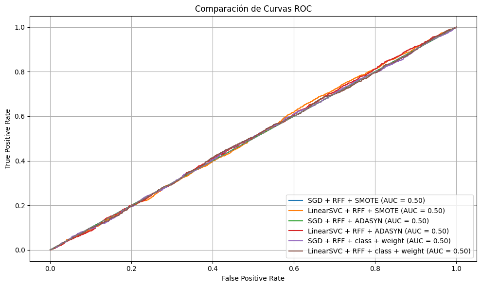

Máquina de Soporte Vectorial#
!pip install -U imbalanced-learn
Requirement already satisfied: imbalanced-learn in c:\users\dell\anaconda3\envs\ml_venv\lib\site-packages (0.12.4)
Requirement already satisfied: numpy>=1.17.3 in c:\users\dell\anaconda3\envs\ml_venv\lib\site-packages (from imbalanced-learn) (1.26.4)
Requirement already satisfied: scipy>=1.5.0 in c:\users\dell\anaconda3\envs\ml_venv\lib\site-packages (from imbalanced-learn) (1.11.2)
Requirement already satisfied: scikit-learn>=1.0.2 in c:\users\dell\anaconda3\envs\ml_venv\lib\site-packages (from imbalanced-learn) (1.2.2)
Requirement already satisfied: joblib>=1.1.1 in c:\users\dell\anaconda3\envs\ml_venv\lib\site-packages (from imbalanced-learn) (1.3.2)
Requirement already satisfied: threadpoolctl>=2.0.0 in c:\users\dell\anaconda3\envs\ml_venv\lib\site-packages (from imbalanced-learn) (3.2.0)
1: Importación de librerías
import time
import numpy as np
import pandas as pd
from sklearn.model_selection import train_test_split, GridSearchCV
from sklearn.metrics import precision_score, recall_score, f1_score, accuracy_score, roc_auc_score
from sklearn.preprocessing import StandardScaler
from sklearn.pipeline import make_pipeline
from sklearn.svm import LinearSVC
from sklearn.linear_model import SGDClassifier
from sklearn.kernel_approximation import RBFSampler
from imblearn.over_sampling import SMOTE, ADASYN
from imblearn.pipeline import Pipeline as ImbPipeline
import warnings
# Ignorar todos los warnings
warnings.filterwarnings("ignore")
from sklearn.kernel_approximation import RBFSampler
from sklearn.linear_model import SGDClassifier
from sklearn.svm import LinearSVC
from imblearn.pipeline import Pipeline as ImbPipeline
from imblearn.over_sampling import SMOTE, ADASYN
from sklearn.pipeline import make_pipeline
import time
from sklearn.metrics import precision_score, recall_score, f1_score, accuracy_score, roc_auc_score
2: Carga de datos y separación
import pandas as pd
from sklearn.model_selection import train_test_split
# Cargar los datos
df = pd.read_csv(r"C:\Users\DELL\Desktop\Aprendizaje_de_Maquina\credit_risk_the_end.csv")
# Separar variables y target
X = df.drop(columns=["incumplimiento_credito"])
y = df["incumplimiento_credito"]
# Separar en entrenamiento y prueba
X_train, X_test, y_train, y_test = train_test_split(
X, y, test_size=0.2, stratify=y, random_state=42
)
Preprocesamiento#
from sklearn.compose import ColumnTransformer
from sklearn.preprocessing import StandardScaler, OneHotEncoder
# Columnas categóricas y numéricas
cat_cols = X.select_dtypes(include="object").columns.tolist()
num_cols = X.select_dtypes(include=["int64", "float64"]).columns.tolist()
# Preprocesador
preprocessor = ColumnTransformer([
("num", StandardScaler(), num_cols),
("cat", OneHotEncoder(handle_unknown="ignore"), cat_cols)
])
Pipelines#
# Capa RBF
rbf_feature = RBFSampler(gamma=1, n_components=300, random_state=42)
# Modelos base
sgd_svm = SGDClassifier(loss='hinge', random_state=42)
linear_svc = LinearSVC(max_iter=20000, random_state=42)
# Técnicas de balanceo
balanceadores = {
'SMOTE': SMOTE(random_state=42),
'ADASYN': ADASYN(random_state=42),
'class_weight': None
}
# Guardar todos los pipelines
pipelines = {}
for bal_name, sampler in balanceadores.items():
for model_name, clf in [('SGD_RFF', sgd_svm), ('LinearSVC_RFF', linear_svc)]:
key = f"{model_name}_{bal_name}"
if bal_name == 'class_weight':
clf.set_params(class_weight='balanced')
pipe = ImbPipeline([
('preprocessor', preprocessor),
('rbf', rbf_feature),
('clf', clf) # este es el bueno
])
else:
clf.set_params(class_weight=None)
pipe = ImbPipeline([
('preprocessor', preprocessor),
('rbf', rbf_feature),
('sampler', sampler),
('clf', clf)
])
pipelines[key] = pipe
5: Entrenamiento, predicción y evaluación
import warnings
from sklearn.exceptions import ConvergenceWarning
from sklearn.model_selection import GridSearchCV
warnings.filterwarnings("ignore", category=ConvergenceWarning)
results = []
from sklearn.linear_model import SGDClassifier
from sklearn.svm import LinearSVC
final_step_name = pipe.steps[-1][0]
final_estimator = pipe.named_steps[final_step_name]
if isinstance(final_estimator, SGDClassifier):
param_grid = {
f"{final_step_name}__alpha": [0.0001, 0.001, 0.01, 0.1],
f"{final_step_name}__penalty": ["l2", "elasticnet"],
f"{final_step_name}__l1_ratio": [0.15, 0.3, 0.5],
f"{final_step_name}__learning_rate": ["optimal", "adaptive"],
f"{final_step_name}__eta0": [0.001, 0.01],
f"{final_step_name}__early_stopping": [True],
f"{final_step_name}__n_iter_no_change": [5],
f"{final_step_name}__validation_fraction": [0.1],
f"{final_step_name}__max_iter": [1000, 2000]
}
elif isinstance(final_estimator, LinearSVC):
param_grid = {
f"{final_step_name}__C": [0.01, 0.1, 1, 10],
f"{final_step_name}__tol": [1e-3, 1e-4],
f"{final_step_name}__dual": [True, False],
f"{final_step_name}__max_iter": [2000, 3000]
}
else:
raise ValueError(f"Modelo no reconocido: {type(final_estimator)}")
# Entrenamiento y optimización con detección automática del paso final
for name, pipe in pipelines.items():
print(f"üîç Optimizando y entrenando → {name}")
t0 = time.time()
# Detectar el nombre del paso final real (último en el pipeline)
final_step_name = pipe.steps[-1][0]
print(f"➡️ Paso final: {final_step_name}")
# Hiperparámetros según tipo de modelo
if "SGD" in name:
param_grid = {
f"{final_step_name}__alpha": [0.0001, 0.001, 0.01, 0.1],
f"{final_step_name}__penalty": ["l2", "elasticnet"],
f"{final_step_name}__l1_ratio": [0.15, 0.3, 0.5],
f"{final_step_name}__learning_rate": ["optimal", "adaptive"],
f"{final_step_name}__eta0": [0.001, 0.01],
f"{final_step_name}__early_stopping": [True],
f"{final_step_name}__n_iter_no_change": [5],
f"{final_step_name}__validation_fraction": [0.1],
f"{final_step_name}__max_iter": [1000, 2000]
}
else:
param_grid = {
f"{final_step_name}__C": [0.01, 0.1, 1, 10],
f"{final_step_name}__tol": [1e-3, 1e-4],
f"{final_step_name}__dual": [True, False],
f"{final_step_name}__max_iter": [2000, 3000]
}
# GridSearchCV
grid = GridSearchCV(
estimator=pipe,
param_grid=param_grid,
scoring="recall",
cv=3,
n_jobs=-1
)
grid.fit(X_train, y_train)
fit_time = (time.time() - t0) / 60
best_model = grid.best_estimator_
# Guardar modelo entrenado para visualizaciones posteriores
if 'modelos_entrenados' not in globals():
modelos_entrenados = {}
modelos_entrenados[name] = best_model
# Predicciones y métricas
y_pred = best_model.predict(X_test)
try:
y_prob = best_model.predict_proba(X_test)[:, 1]
except:
try:
y_prob = best_model.decision_function(X_test)
except:
y_prob = y_pred
try:
auc = roc_auc_score(y_test, y_prob)
except:
auc = np.nan
results.append({
"Modelo": name,
"Precision": precision_score(y_test, y_pred, zero_division=0),
"Recall1": recall_score(y_test, y_pred, zero_division=0),
"F1": f1_score(y_test, y_pred, zero_division=0),
"Accuracy": accuracy_score(y_test, y_pred),
"AUC": auc,
"Tiempo (min)": fit_time,
"Mejor Parámetro": grid.best_params_
})
üîç Optimizando y entrenando → SGD_RFF_SMOTE
➡️ Paso final: clf
üîç Optimizando y entrenando → LinearSVC_RFF_SMOTE
➡️ Paso final: clf
üîç Optimizando y entrenando → SGD_RFF_ADASYN
➡️ Paso final: clf
üîç Optimizando y entrenando → LinearSVC_RFF_ADASYN
➡️ Paso final: clf
üîç Optimizando y entrenando → SGD_RFF_class_weight
➡️ Paso final: clf
üîç Optimizando y entrenando → LinearSVC_RFF_class_weight
➡️ Paso final: clf
df_resultados = pd.DataFrame(results)
df_resultados = df_resultados.sort_values(by="Recall1", ascending=False)
# Asegúrate de tener pandas importado
import pandas as pd
# Si ya tienes df_resultados, formatea y colorea:
df_resultados_styled = (
df_resultados.style
.format({
"Precision": "{:.4f}",
"Recall1": "{:.4f}",
"Accuracy": "{:.4f}",
"F1": "{:.4f}",
"AUC": "{:.4f}",
"Tiempo (min)": "{:.4f}"
})
.background_gradient(subset=["Precision"], cmap="YlOrBr")
.background_gradient(subset=["Recall1"], cmap="Reds")
.background_gradient(subset=["Accuracy"], cmap="Oranges")
.background_gradient(subset=["F1"], cmap="Greens")
.background_gradient(subset=["AUC"], cmap="Purples")
.background_gradient(subset=["Tiempo (min)"], cmap="Blues")
)
# Mostrar tabla con estilos
display(df_resultados_styled)
| Modelo | Precision | Recall1 | F1 | Accuracy | AUC | Tiempo (min) | Mejor Parámetro | |
|---|---|---|---|---|---|---|---|---|
| 0 | SGD_RFF_SMOTE | 0.0855 | 1.0000 | 0.1575 | 0.0855 | 0.5000 | 3.6835 | {'clf__alpha': 0.01, 'clf__early_stopping': True, 'clf__eta0': 0.001, 'clf__l1_ratio': 0.3, 'clf__learning_rate': 'adaptive', 'clf__max_iter': 1000, 'clf__n_iter_no_change': 5, 'clf__penalty': 'elasticnet', 'clf__validation_fraction': 0.1} |
| 4 | SGD_RFF_class_weight | 0.0857 | 0.6950 | 0.1525 | 0.3399 | 0.5006 | 1.9115 | {'clf__alpha': 0.01, 'clf__early_stopping': True, 'clf__eta0': 0.01, 'clf__l1_ratio': 0.15, 'clf__learning_rate': 'adaptive', 'clf__max_iter': 1000, 'clf__n_iter_no_change': 5, 'clf__penalty': 'l2', 'clf__validation_fraction': 0.1} |
| 5 | LinearSVC_RFF_class_weight | 0.0876 | 0.4713 | 0.1477 | 0.5352 | 0.5014 | 4.3679 | {'clf__C': 10, 'clf__dual': True, 'clf__max_iter': 2000, 'clf__tol': 0.0001} |
| 3 | LinearSVC_RFF_ADASYN | 0.0873 | 0.4556 | 0.1465 | 0.5461 | 0.5048 | 2.0657 | {'clf__C': 0.1, 'clf__dual': True, 'clf__max_iter': 2000, 'clf__tol': 0.001} |
| 1 | LinearSVC_RFF_SMOTE | 0.0843 | 0.4385 | 0.1415 | 0.5451 | 0.5043 | 1.4634 | {'clf__C': 0.1, 'clf__dual': True, 'clf__max_iter': 2000, 'clf__tol': 0.001} |
| 2 | SGD_RFF_ADASYN | 0.0000 | 0.0000 | 0.0000 | 0.9145 | 0.5000 | 6.1008 | {'clf__alpha': 0.01, 'clf__early_stopping': True, 'clf__eta0': 0.001, 'clf__l1_ratio': 0.15, 'clf__learning_rate': 'optimal', 'clf__max_iter': 1000, 'clf__n_iter_no_change': 5, 'clf__penalty': 'elasticnet', 'clf__validation_fraction': 0.1} |
y_pred = modelos_entrenados["SGD_RFF_ADASYN"].predict(X_test)
print("Predicciones únicas:", np.unique(y_pred, return_counts=True))
Predicciones únicas: (array([0], dtype=int64), array([15689], dtype=int64))
Boxplot
# Convertir a formato largo (melt)
df_long = df_resultados.melt(
id_vars="Modelo",
value_vars=["Precision", "Recall1", "F1", "AUC"],
var_name="Métrica",
value_name="Valor"
)
# (Opcional) Extraer el tipo de modelo para agrupar (SGD o LinearSVC)
df_long["Algoritmo"] = df_long["Modelo"].apply(lambda x: x.split("_")[0])
import seaborn as sns
import matplotlib.pyplot as plt
plt.figure(figsize=(12, 6))
sns.boxplot(data=df_long, x="Métrica", y="Valor", hue="Algoritmo", palette="Pastel1")
plt.title("Boxplot de Métricas por Algoritmo")
plt.ylabel("Valor de la Métrica")
plt.xlabel("Métrica")
plt.grid(True, axis='y')
plt.legend(title="Algoritmo")
plt.tight_layout()
plt.show()
Matrices de Confusión Comparativas#
import matplotlib.pyplot as plt
import seaborn as sns
from sklearn.metrics import confusion_matrix
fig, axes = plt.subplots(nrows=int(np.ceil(len(modelos_entrenados)/3)),
ncols=3,
figsize=(16, 10))
axes = axes.flatten()
for i, (nombre_modelo, modelo) in enumerate(modelos_entrenados.items()):
y_pred = modelo.predict(X_test)
cm = confusion_matrix(y_test, y_pred)
sns.heatmap(cm, annot=True, fmt="d", cmap="Pastel1", ax=axes[i],
cbar=False, linewidths=1, linecolor='white', square=True)
axes[i].set_title(nombre_modelo.replace("_", " + "), fontsize=10)
axes[i].set_xlabel("Predicción")
axes[i].set_ylabel("Real")
# Ocultar ejes vacíos si hay menos de 3xN
for j in range(i+1, len(axes)):
fig.delaxes(axes[j])
plt.tight_layout()
plt.show()
Curvas ROC comparativas#
from sklearn.metrics import roc_curve, roc_auc_score
import matplotlib.pyplot as plt
plt.figure(figsize=(10, 6))
for nombre_modelo, modelo in modelos_entrenados.items():
try:
# Probabilidad estimada (si disponible)
y_prob = modelo.predict_proba(X_test)[:, 1]
except:
# Si el modelo no tiene predict_proba, usar decision_function
try:
y_prob = modelo.decision_function(X_test)
except:
# Si no tiene ninguno, omitir modelo
print(f"⚠️ El modelo {nombre_modelo} no tiene probabilidades.")
continue
fpr, tpr, _ = roc_curve(y_test, y_prob)
auc_score = roc_auc_score(y_test, y_prob)
# Formatear nombre para el gráfico
nombre_limpio = nombre_modelo.replace("_", " + ")
plt.plot(fpr, tpr, label=f"{nombre_limpio} (AUC = {auc_score:.2f})")
# Línea de referencia (azar)
plt.plot([0, 1], [0, 1], linestyle='--', color='gray')
# Personalización
plt.title("Comparación de Curvas ROC")
plt.xlabel("False Positive Rate")
plt.ylabel("True Positive Rate")
plt.legend(loc="lower right")
plt.grid(True)
plt.tight_layout()
plt.show()

curvas Precision-Recall comparativas#
from sklearn.metrics import precision_recall_curve, average_precision_score
import matplotlib.pyplot as plt
plt.figure(figsize=(10, 6))
for nombre_modelo, modelo in modelos_entrenados.items():
try:
# Obtener probabilidades
y_prob = modelo.predict_proba(X_test)[:, 1]
except:
try:
y_prob = modelo.decision_function(X_test)
except:
print(f"⚠️ El modelo {nombre_modelo} no tiene salida continua.")
continue
precision, recall, _ = precision_recall_curve(y_test, y_prob)
ap = average_precision_score(y_test, y_prob)
nombre_limpio = nombre_modelo.replace("_", " + ")
plt.plot(recall, precision, label=f"{nombre_limpio} (AP = {ap:.2f})")
# Formato del gráfico
plt.title("Comparación de Curvas Precision-Recall")
plt.xlabel("Recall")
plt.ylabel("Precision")
plt.legend(loc="lower left")
plt.grid(True)
plt.tight_layout()
plt.show()
Crear el boxplot por métrica agrupado por algoritmo
# Extraer tipo de modelo (SGD o LinearSVC) desde el nombre
df_resultados["Algoritmo"] = df_resultados["Modelo"].apply(lambda x: x.split("_")[0])
import seaborn as sns
import matplotlib.pyplot as plt
plt.figure(figsize=(8, 5))
sns.boxplot(data=df_resultados, x="Algoritmo", y="Tiempo (min)", palette="Pastel1")
plt.title("Boxplot de Tiempos de Optimización por Algoritmo")
plt.ylabel("Tiempo (minutos)")
plt.xlabel("Algoritmo")
plt.grid(True, axis='y')
plt.tight_layout()
plt.show()
CÓDIGO PARA BOXPLOT DE TIEMPO DE OPTIMIZACIÓN POR MODELO
import seaborn as sns
import matplotlib.pyplot as plt
plt.figure(figsize=(12, 6))
# Barplot de tiempo de optimización por modelo
sns.barplot(
data=df_resultados,
x="Modelo",
y="Tiempo (min)",
palette="Pastel1"
)
# Rotar etiquetas si hay muchas
plt.xticks(rotation=45, ha='right')
# Títulos y etiquetas
plt.title("Tiempos de Optimización por Modelo")
plt.ylabel("Tiempo (min)")
plt.xlabel("Modelo")
plt.grid(True, axis='y')
plt.tight_layout()
plt.show()
Barplot falsos positivos y falsos negativos
from sklearn.metrics import confusion_matrix
# Inicializar lista de resultados
fp_fn_data = []
for nombre_modelo, modelo in modelos_entrenados.items():
y_pred = modelo.predict(X_test)
cm = confusion_matrix(y_test, y_pred)
tn, fp, fn, tp = cm.ravel()
fp_fn_data.append({
"Modelo": nombre_modelo.replace("_", " + "),
"Falsos Positivos": fp,
"Falsos Negativos": fn
})
# Convertir a DataFrame
df_fpfn = pd.DataFrame(fp_fn_data)
df_fpfn_long = df_fpfn.melt(
id_vars="Modelo",
value_vars=["Falsos Positivos", "Falsos Negativos"],
var_name="Tipo de Error",
value_name="Cantidad"
)
import seaborn as sns
import matplotlib.pyplot as plt
plt.figure(figsize=(14, 6))
sns.barplot(data=df_fpfn_long, x="Modelo", y="Cantidad", hue="Tipo de Error", palette="Pastel1")
plt.title("Falsos Positivos y Falsos Negativos por Modelo")
plt.xlabel("Modelo")
plt.ylabel("Cantidad de Errores")
plt.xticks(rotation=45, ha="right")
plt.grid(True, axis='y')
plt.tight_layout()
plt.show()
Curva de Aprendizaje#
from sklearn.model_selection import learning_curve
import numpy as np
# Selecciona un pipeline para graficar la curva (ejemplo: uno de tus modelos)
modelo_base = pipelines["SGD_RFF_SMOTE"]
# Tamaños relativos del set de entrenamiento
train_sizes, train_scores, test_scores = learning_curve(
estimator=modelo_base,
X=X_train,
y=y_train,
cv=5,
scoring='f1',
train_sizes=np.linspace(0.1, 1.0, 8),
n_jobs=-1
)
# Promedios y desviaciones
train_mean = train_scores.mean(axis=1)
train_std = train_scores.std(axis=1)
test_mean = test_scores.mean(axis=1)
test_std = test_scores.std(axis=1)
# Construir DataFrame para seaborn
df_learning = pd.DataFrame({
"Tamaño entrenamiento": np.concatenate([train_sizes, train_sizes]),
"F1 Score": np.concatenate([train_mean, test_mean]),
"Tipo": ["Entrenamiento"] * len(train_sizes) + ["Validación"] * len(train_sizes)
})
import seaborn as sns
import matplotlib.pyplot as plt
plt.figure(figsize=(14, 6))
sns.barplot(
data=df_learning,
x="Tamaño entrenamiento",
y="F1 Score",
hue="Tipo",
palette="Pastel1"
)
plt.title("Curva de Aprendizaje (F1 Score) - Modelo: SGD + RFF + SMOTE")
plt.xlabel("Tamaño del conjunto de entrenamiento")
plt.ylabel("F1 Score")
plt.grid(True, axis='y')
plt.tight_layout()
plt.show()
from sklearn.model_selection import learning_curve
import matplotlib.pyplot as plt
# Métrica de evaluación (puedes cambiarla por "accuracy", "f1", etc.)
scoring = "recall"
# Tamaños de entrenamiento a probar
train_sizes = np.linspace(0.1, 1.0, 5)
plt.figure(figsize=(12, 6))
# Comparar modelos entrenados
for nombre, modelo in modelos_entrenados.items():
# Calcular curvas de aprendizaje
train_sizes_abs, train_scores, val_scores = learning_curve(
estimator=modelo,
X=X_train,
y=y_train,
train_sizes=train_sizes,
cv=3,
scoring=scoring,
n_jobs=-1,
shuffle=True,
random_state=42
)
# Promedio de scores
train_mean = np.mean(train_scores, axis=1)
val_mean = np.mean(val_scores, axis=1)
# Graficar curva
plt.plot(train_sizes_abs, val_mean, label=nombre.replace("_", " + "))
# Personalización
plt.title(f"Curva de Aprendizaje Comparativa ({scoring})")
plt.xlabel("Tamaño del set de entrenamiento")
plt.ylabel(f"Score ({scoring})")
plt.legend(loc="best")
plt.grid(True)
plt.tight_layout()
plt.show()
Heatmap de Recall1 por Técnica#
# Asegúrate de trabajar con una copia para no modificar el original
df_heat = df_resultados.copy()
# Extraer "Algoritmo" y "Técnica" desde el nombre del modelo (ej: "SGD_RFF_SMOTE")
df_heat["Algoritmo"] = df_heat["Modelo"].apply(lambda x: x.split("_")[0])
df_heat["Técnica"] = df_heat["Modelo"].apply(lambda x: x.split("_")[-1])
# Crear tabla estilo matriz: filas = Técnica, columnas = Algoritmo, valores = Recall1
tabla_heatmap = df_heat.pivot_table(
index="Técnica",
columns="Algoritmo",
values="Recall1"
)
import seaborn as sns
import matplotlib.pyplot as plt
plt.figure(figsize=(8, 5))
sns.heatmap(
tabla_heatmap,
annot=True,
fmt=".4f",
cmap="Pastel1",
linewidths=0.5,
linecolor="white"
)
plt.title("Heatmap de Recall1 por Técnica de Balanceo y Algoritmo")
plt.xlabel("Algoritmo")
plt.ylabel("Técnica de Balanceo")
plt.tight_layout()
plt.show()
Radar Plot#
import pandas as pd
from sklearn.preprocessing import MinMaxScaler
# Seleccionar métricas a comparar
metricas = ["Precision", "Recall1", "F1", "Accuracy", "AUC"]
# Crear copia con solo métricas y modelo
df_radar = df_resultados[["Modelo"] + metricas].copy()
# Normalizar valores entre 0 y 1 para que encajen en la escala radial
scaler = MinMaxScaler()
df_radar[metricas] = scaler.fit_transform(df_radar[metricas])
import matplotlib.pyplot as plt
import numpy as np
def radar_plot(df, model_names, metricas):
# Ángulos para cada eje
N = len(metricas)
angles = np.linspace(0, 2 * np.pi, N, endpoint=False).tolist()
angles += angles[:1] # Cerrar el círculo
# Inicializar gráfico
plt.figure(figsize=(10, 8))
ax = plt.subplot(111, polar=True)
# Dibujar uno por uno
for i, modelo in enumerate(model_names):
valores = df.loc[df["Modelo"] == modelo, metricas].values.flatten().tolist()
valores += valores[:1] # Cerrar círculo
ax.plot(angles, valores, label=modelo.replace("_", " + "), linewidth=2)
ax.fill(angles, valores, alpha=0.1)
# Etiquetas de cada métrica
ax.set_xticks(angles[:-1])
ax.set_xticklabels(metricas)
# Opciones estéticas
ax.set_title("Radar Plot de Métricas por Modelo", size=14)
ax.legend(loc='upper right', bbox_to_anchor=(1.2, 1.1))
ax.set_rlabel_position(30)
plt.tight_layout()
plt.show()
# Elegir algunos modelos para visualizar (máximo 3-5 idealmente para claridad)
modelos_a_comparar = df_radar["Modelo"].tolist() # O selecciona a mano una lista
# Llamar función
radar_plot(df_radar, modelos_a_comparar, metricas)
top3 = df_resultados.sort_values("Recall1", ascending=False).head(3)["Modelo"].tolist()
radar_plot(df_radar, top3, metricas)
Hiperparametros optimos#
# Expandir los parámetros en columnas separadas
df_hiper = pd.DataFrame(results)
# Expandir diccionario de hiperparámetros
parametros = df_hiper["Mejor Parámetro"].apply(pd.Series)
# Combinar con nombre de modelo
df_hiper = pd.concat([df_hiper[["Modelo"]], parametros], axis=1)
import seaborn as sns
# Paso 1: Eliminar columnas completamente vacías
df_hiper_limpio = df_hiper.dropna(axis=1, how='all')
# Paso 2: Eliminar columnas duplicadas (por nombre del paso alternativo)
# Si existe tanto 'clf__' como 'sgdclassifier__', eliminamos los segundos
cols_a_eliminar = [col for col in df_hiper_limpio.columns if col.startswith("sgdclassifier__")]
df_hiper_limpio = df_hiper_limpio.drop(columns=cols_a_eliminar)
# Paso 3: Aplicar estilo a la versión limpia
pastel_colors = sns.color_palette("Pastel1", n_colors=len(df_hiper_limpio.columns)-1)
styled = df_hiper_limpio.style
for col, color in zip(df_hiper_limpio.columns[1:], pastel_colors):
styled = styled.set_properties(
subset=[col],
**{'background-color': f'rgba({int(color[0]*255)}, {int(color[1]*255)}, {int(color[2]*255)}, 0.4)'}
)
styled = styled.set_table_styles([
{"selector": "th", "props": [("background-color", "#f3f3f3"), ("font-weight", "bold")]}
])
# Mostrar la tabla estilizada
display(styled)
| Modelo | clf__alpha | clf__early_stopping | clf__eta0 | clf__l1_ratio | clf__learning_rate | clf__max_iter | clf__n_iter_no_change | clf__penalty | clf__validation_fraction | clf__C | clf__dual | clf__tol | |
|---|---|---|---|---|---|---|---|---|---|---|---|---|---|
| 0 | SGD_RFF_SMOTE | 0.010000 | True | 0.001000 | 0.300000 | adaptive | 1000 | 5.000000 | elasticnet | 0.100000 | nan | nan | nan |
| 1 | LinearSVC_RFF_SMOTE | nan | nan | nan | nan | nan | 2000 | nan | nan | nan | 0.100000 | True | 0.001000 |
| 2 | SGD_RFF_ADASYN | 0.010000 | True | 0.001000 | 0.150000 | optimal | 1000 | 5.000000 | elasticnet | 0.100000 | nan | nan | nan |
| 3 | LinearSVC_RFF_ADASYN | nan | nan | nan | nan | nan | 2000 | nan | nan | nan | 0.100000 | True | 0.001000 |
| 4 | SGD_RFF_class_weight | 0.010000 | True | 0.010000 | 0.150000 | adaptive | 1000 | 5.000000 | l2 | 0.100000 | nan | nan | nan |
| 5 | LinearSVC_RFF_class_weight | nan | nan | nan | nan | nan | 2000 | nan | nan | nan | 10.000000 | True | 0.000100 |
Guardar#
import joblib
import os
# Crear carpeta para guardar modelos
os.makedirs("modelos_guardados", exist_ok=True)
# Guardar cada modelo en la carpeta
for nombre_modelo, modelo in modelos_entrenados.items():
nombre_archivo = f"modelos_guardados/{nombre_modelo}.joblib"
joblib.dump(modelo, nombre_archivo)
print(f"✅ Modelo guardado: {nombre_archivo}")
✅ Modelo guardado: modelos_guardados/SGD_RFF_SMOTE.joblib
✅ Modelo guardado: modelos_guardados/LinearSVC_RFF_SMOTE.joblib
✅ Modelo guardado: modelos_guardados/SGD_RFF_ADASYN.joblib
✅ Modelo guardado: modelos_guardados/LinearSVC_RFF_ADASYN.joblib
✅ Modelo guardado: modelos_guardados/SGD_RFF_class_weight.joblib
✅ Modelo guardado: modelos_guardados/LinearSVC_RFF_class_weight.joblib